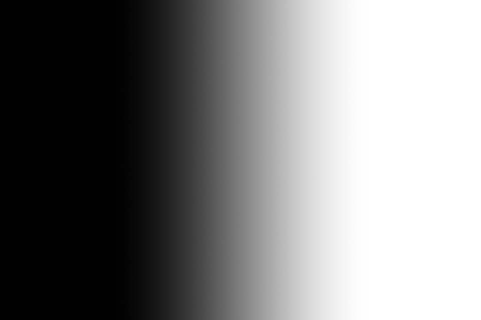

1 · Source layer mask
M
M ← Screen recombination → Mask
A scalar pixel mask is broadcast equally to R, G and B. Use Mask as the input kind.
An attached pixel mask, displayed as grayscale. Black keeps A; white selects B in the live blend.
16-bit output; no rescaling or clipping needed.
Download recipe